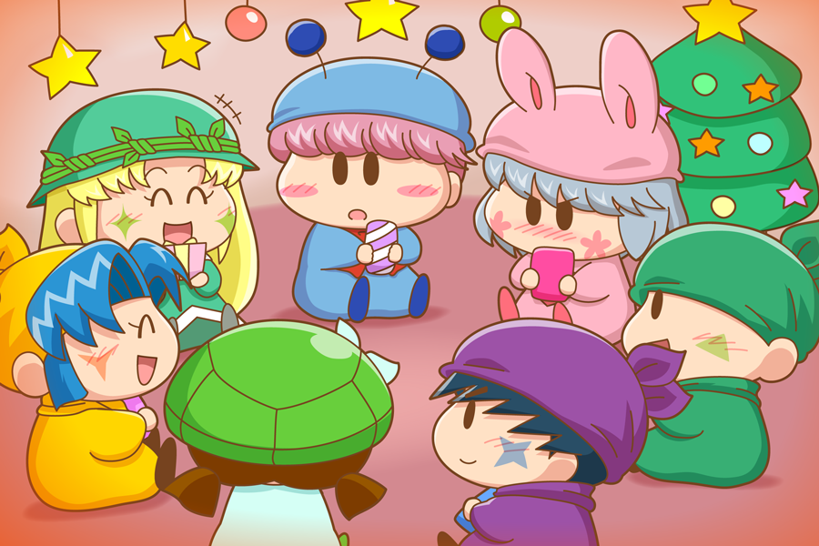

大変遅くなり、すみません。ようやく投票結果をアップできる状態になったので、これから結果をどんどんアップしていきたいと思います(^^)。
投票リニューアル後の第１回目の投票は、クリスマス向けのこのお題。プレゼント交換用にパピィが選んだプレゼントは、手作りクッキーが選ばれました！ この日のために一生懸命作ったパピィのクッキーははたしてどんな味がするのでしょうか？ パピィはきっとムルモに渡すことを想像しながら作ったのだと思いますが、プレゼント交換なので必ずしもムルモに行き渡るとは限りませんね。ムルモ以外の妖精に渡ってしまうシチュエーションを考えるのもまた面白そうです（サスケやハンゾーに行き渡ったら食べるな！とか言って取り上げたりしそう^^;）。
ムルモ＆サスケ＆ハンゾー＆ヤマネ＆パピィ＆カメリ＆アロマ(1)

―――もうすぐクリスマス。
妖精界でも街はたくさんのクリスマスの飾りつけが施され、あちこちからクリスマスの音楽も聞こえてきます。
アロマ「パピィちゃん、今度の日曜日に私の家でクリスマスのプレゼント交換をやってみない？」
パピィ「プレゼント交換！？」
アロマ「みんながプレゼントを持ってきて、歌を歌いながらプレゼントを回すのよ。誰のプレゼントがもらえるのかはわからないけど、そのドキドキ感が楽しいの」
パピィ「ふ～ん？ ちょういうのがあるのね。わかったわ、他に参加ちそうな妖精に声をかけてみるわね」
アロマ「うん！」
そして日曜日がやってきました。
プレゼントを持った妖精たちがアロマの家に集まりました。
パピィ「思ったよりも集まったわね」
パピィはムルモとカメリに声をかけましたが、カメリはサスケを呼び、サスケはヤマネとハンゾーを呼んだのでした。
パピィ「あたちの手作りクッキー、ムルモに届くのかちら・・・」
カメリ「わたしの漬物が～サスケくんに～届かないかなぁ・・・」
ヤマネ「私はプレゼントを何にするかでかなり悩んだでございます」
サスケ「ヤマネのプレゼント、オイラ絶対にゲットしてみせるぜ！」
アロマ「ちょっと大人っぽいプレゼントを選んだけれど、大丈夫だったかしら」
ハンゾー「ボクは自分で選んだプレゼントが欲しいのら～」
ムルモ「アロマしゃんやヤマネしゃんのプレゼントが気になるでしゅ」
パピィ「むっ」
果たして自分の望み通りになる妖精は現れるのでしょうか？(^◇^;)
絵の方は、１位の投票結果とあまり関係のない絵になってしまいました。どの結果でもこの絵になりますね(^^;。ちびっこ妖精をフル動員させたら妖精７人を描くことになり、かなり時間がかかってしまいました。
プレゼント交換の結末は全然考えていませんが、パピィのプレゼント（手作りクッキー）がヤマネに渡ってしまわないかが一番心配だったりします。
(2015/4/10)